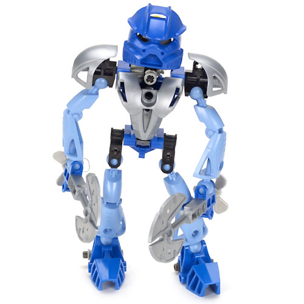

According to Matoran legends, Gali was the sustainer of life. She could summon tidal waves and rainstorms, as she commanded water and created whirlpools, floods, tidal waves, rainstorms, and other phenomena related to water. As a Toa Mata, she carried Water Hooks, but they were replaced with Aqua Axes upon her transformation into a Toa Nuva.
She received Adaptive Armor and tools when the Toa Nuva were on Artakha. As a Mistika Gali had a Nynrah Ghostblaster with an Aqua Focus Target for amazing precision. She also had two fins on her mask to help her cut through the air of the swamp faster.

Although considered to be the wisest and most peaceful of the Toa, Gali still had an edge to her. She was not all calm waves lapping against the shore; she had a slight temper, though not to the degree of Tahu or Kopaka. However, Gali was always restrictive in using her powers and believed that fighting is not the answer to all conflicts. Gali was very powerful and she showed this power when she destroyed the entire realm of Karzahni to defeat Icarax. She strongly believed in upholding the three Matoran virtues, even to the point of locking horns with her brothers, arguing this point.